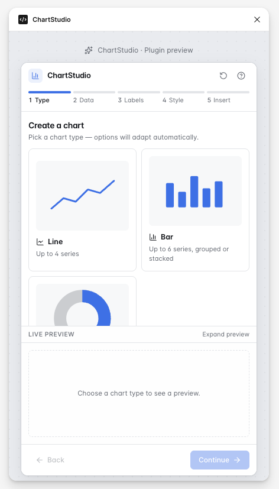
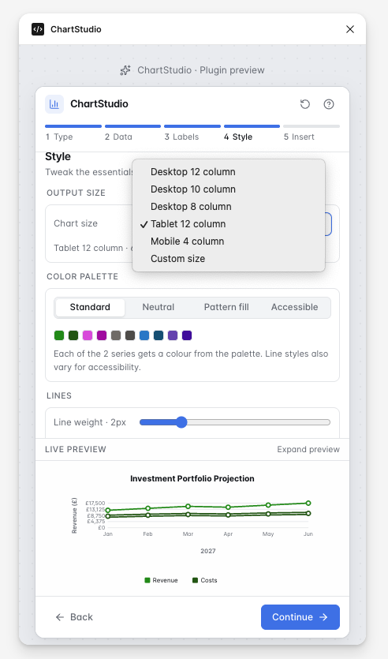
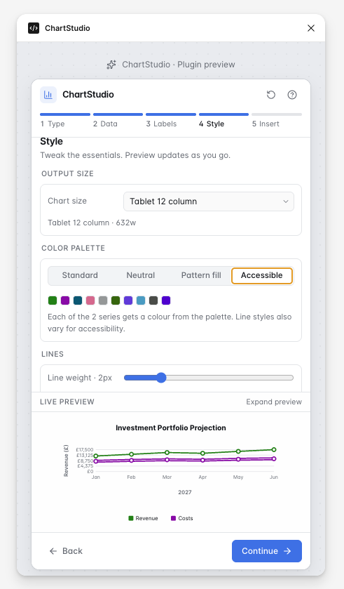
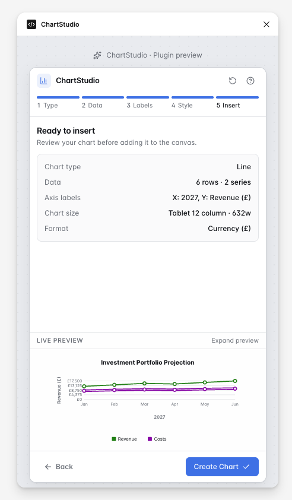
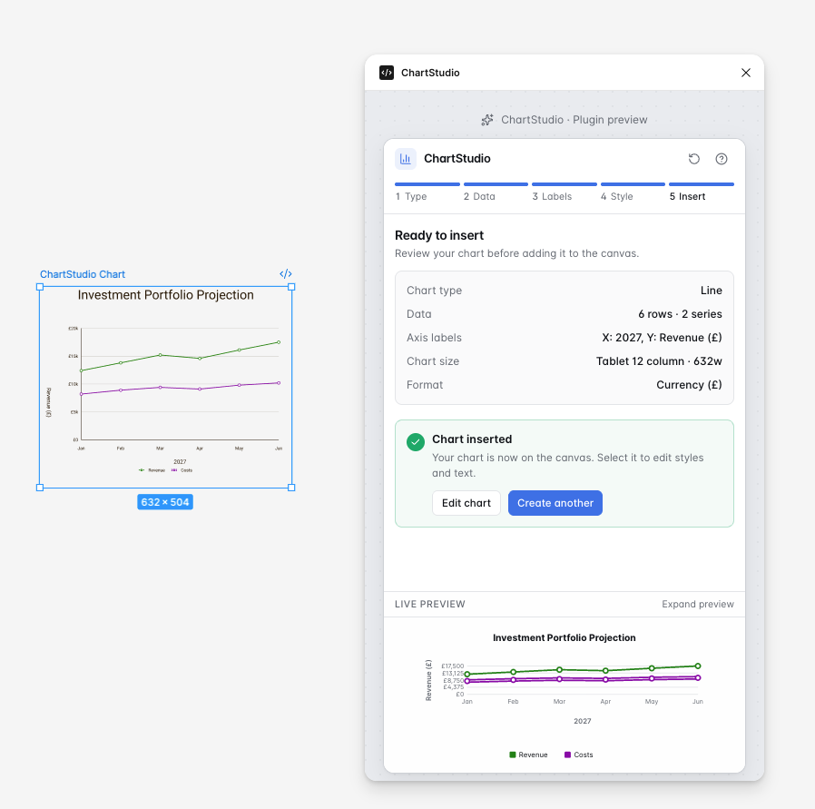

Product design and interactive prototype
ChartStudio
A working Figma plugin prototype that helps designers create and insert consistent, accessible charts through a guided workflow.
I conceived the product, designed its interaction model and interface, defined the chart-system and accessibility rules, and directed its AI-assisted development from an identified workflow problem to a functioning plugin.
Project summary
- My role
- Product design, UI design, design systems and prototype direction
- Users
- Product and UI designers creating charts for digital products
- Focus
- Accessible, consistent and efficient chart creation
- Output
- Working Figma plugin prototype
- Status
- Core workflow built; structured usability testing is the next stage

What I owned
I led the product concept, interaction model, interface design and chart-system rules. This included defining the plugin journey, responsive output sizes, chart configuration controls, accessibility options and the structure of the generated chart components.
- Product concept and workflow
- Plugin interface and interaction design
- Chart layout and responsive rules
- Accessible colour and labelling options
- Reusable component behaviour
- Prompting and directing AI-assisted development
- Reviewing the generated implementation and identifying issues
AI-assisted tools supported implementation, but the product direction, workflow, interface structure and chart-system decisions remained design-led.
The problem
While designing the data-visualisation experience for a financial proposition, I evaluated several chart plugins available through the Figma Community. Although they promised to accelerate chart creation, I found that some were unreliable, unnecessarily complicated or unable to produce the chart types and visual treatments the product required.
Accessibility was another significant limitation. Colour, labelling, readability and responsive behaviour still needed to be resolved manually. This revealed an opportunity for a more dependable, guided tool—one tailored to the organisation’s product requirements while embedding accessibility and consistency into the chart-creation workflow.
The product opportunity
Rather than continuing to construct charts manually or adapting unreliable plugins, I explored how a bespoke Figma tool could help designers:
- Create charts through a clear, guided workflow
- Generate the chart types required by the product
- Apply consistent visual, accessibility and responsive rules
- Insert completed charts directly into the Figma canvas
- Reduce repetitive manual design work
Users and proposed success measures
ChartStudio was designed primarily for product and UI designers creating charts for digital products, dashboards and financial propositions. As a self-initiated prototype, it did not have live-product analytics, so I defined the measures that would guide structured validation:
- Successful chart creation and insertion
- Time required to create a chart
- Errors or hesitation during the workflow
- Ability to select appropriate chart settings
- Accessibility and readability of the generated output
- Usability of the generated Figma layers
- Designer confidence in the finished chart
Key product decisions
Decision 1: Guided workflow instead of one complex screen
I divided chart creation into focused stages: chart selection, data entry, labelling, sizing, styling and final review. Presenting every control simultaneously would have been faster for experienced users to scan, but considerably more complicated for occasional users.
Trade-off: The staged journey introduces additional steps, so future testing should determine whether experienced users also need shortcuts or a condensed editing mode.
Decision 2: Responsive presets with a custom option
I introduced desktop, tablet and mobile output presets to help designers create charts that aligned with common product layouts. Completely arbitrary sizing would offer maximum freedom, but could also produce inconsistent output and readability problems at smaller dimensions.
Trade-off: Presets cannot represent every product context, making the custom option and clear resizing behaviour essential.


Decision 3: Accessibility during creation
Accessible palette choices, labelling, legends and value formatting were integrated into the main workflow rather than presented as a final compliance check. This encourages designers to consider readability and non-colour-dependent communication while constructing the chart.
Trade-off: Automated guidance can improve consistency but cannot guarantee that every chart is appropriate or accessible; designers must still assess meaning, content and context.
Decision 4: Review before insertion
I added a final review stage showing the selected settings and chart preview before insertion. Immediate insertion would shorten the workflow, but correcting an unsuitable chart afterwards would create unnecessary canvas clutter and rework.
Trade-off: The confirmation step adds friction, so it needs to remain concise and useful rather than merely repeating previous information.

Accessibility and system rules
The plugin experience applies accessibility and system thinking directly to chart creation so each output can follow predictable visual rules.
- Accessible palette choices
- Clear chart titles and axis labels
- Legends that do not rely on colour alone
- Predictable spacing and alignment
- Responsive output presets
- Reusable visual rules across bar, line and doughnut charts
- Controls for values, labels and formatting
- Maintaining chart readability at smaller sizes
From design concept to working prototype
I used AI-assisted development to move beyond static interface designs and test how the proposed workflow could behave as a functioning plugin. I defined the required interactions, component behaviour, chart rules and acceptance criteria, then reviewed and refined the generated implementation.
This process involved identifying implementation issues, clarifying responsive behaviour, correcting chart layouts and iterating on controls until the prototype more closely matched the intended product experience.
Feedback and early validation
I discussed the concept with fellow UI designers, who supported the need for a more reliable, accessible and tailored approach to creating charts in Figma. Their feedback reinforced the relevance of the problem and encouraged the development of the plugin.
I then evaluated the working prototype by completing the intended end-to-end journey: selecting a chart type, entering data, configuring its presentation, reviewing the result and inserting the generated chart into Figma.
The prototype demonstrates that the core interaction is technically achievable. Structured usability testing with a wider group of product and UI designers would be the next stage of validation.
Designing the complete system
Moving from static interface designs to a functioning plugin exposed behavioural and technical conditions that needed to be resolved:
- Keeping doughnut charts circular at different sizes.
- Preventing labels and legends from overlapping.
- Aligning axis labels and grid lines so the preview felt intentional.
- Maintaining consistent spacing at different breakpoints.
- Ensuring generated chart layers remain usable in Figma.
- Balancing configuration options with a simple guided workflow.
Prototype journey
The demonstration follows the complete ChartStudio journey: adding source data, configuring labels and styling, reviewing the result and inserting the generated chart into Figma.
Key moments

Outcome
ChartStudio progressed from a problem identified during genuine financial-product work into a functioning Figma plugin prototype capable of generating and inserting charts.
The project demonstrates how I combine product thinking, detailed interaction design, accessibility, system rules and AI-assisted development to turn an identified workflow problem into a tangible tool.
Peer feedback supported the relevance of the concept, while building the working prototype exposed practical considerations including responsive chart behaviour, label collisions, layer structure and the balance between flexibility and simplicity.
Next steps
The next stage would be structured testing with product and UI designers to:
- Measure chart-creation and insertion success
- Compare completion time with manual chart construction
- Identify confusion or hesitation within the guided workflow
- Validate keyboard and assistive-technology behaviour
- Assess the usability of generated Figma layers
- Determine whether experienced users need shortcuts
- Explore CSV import if testing confirms a genuine need